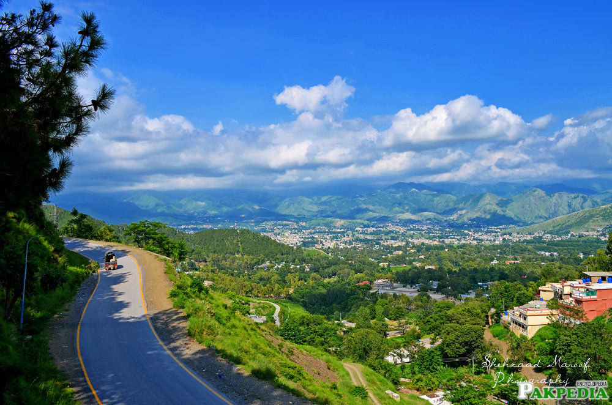

Philadelphia, PA, USA
I was born and raised in Philadelphia, PA and have lived here all of my life. My mother migrated here from Egypt. I love the city and I am a big fan of the sports teams.

Rome, Italy
My dad lives in Rome, Italy so I went to go visit him one summer. I believe it was almost 10 years ago so I don't remember much. However, there are of course places that I could never forget visiting like the Colosseum and Trevi Fountain. Overall, Rome is a beautiful city and I would hope to visit again one day.


Cairo, Egypt
I went to Egypt to visit my family. I have a lot of family there and have been there 3 times so I was able to visit a lot of places. My most recent visit way in 2021. I went to the pyramids, the Egyptian museum, and the Nile River.

Abbottabad, Pakistan
I have only been to Pakistan once and it was for my sister's weeding in 2017. I did enjoy my time there and one difference I can tell when visiting Pakistan is that there are a lot of moutains.
